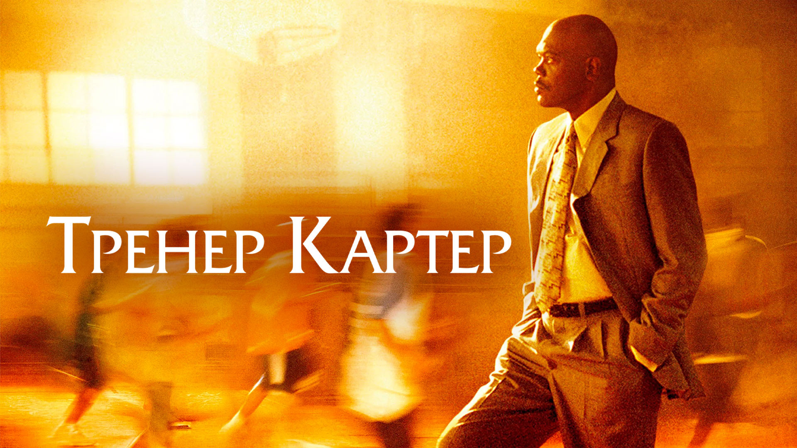
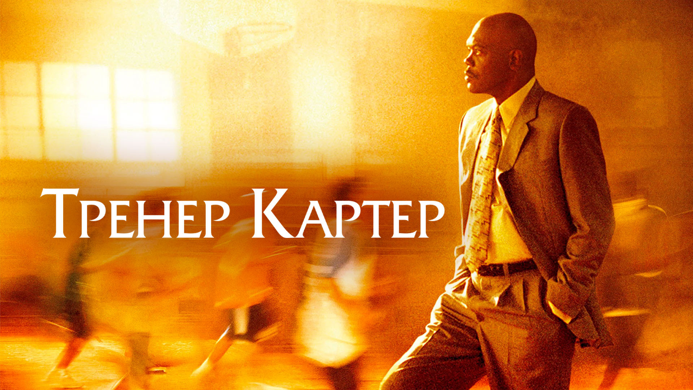

Описание
«Тре́нер Картер» (англ. Coach Carter) — фильм, основанный на реальных событиях из жизни тренера Кена Картера. Премьера фильма состоялась 13 января 2005 года.  

Кен Картер, в прошлом баскетболист, становится тренером школьной команды Ричмонда. Благодаря его усилиям, «Ричмонд Ойлерс» не испытывают горечь поражений и выигрывают в матчах. Но в середине сезона Картер закрывает доступ к тренировкам и матчам из-за плохой успеваемости в школе у игроков. Команда пропустила два матча и заработала тем самым два технических поражения. Картер так и не открывал дверь спортзала, пока игроки не стали хорошо учиться. 
Фильм основан на реальной истории, происшедшей в 1999 году в Ричмонде, штат Калифорния. Тренер школьной команды по баскетболу Кен Картер принял в середине сезона беспрецедентное решение, запретив игрокам, не испытавшим ещё ни одного поражения, выходить на площадку из-за низкой успеваемости в школе. В итоге команда пропустила две игры в чемпионате, а юным баскетболистам был закрыт доступ в спортзал до тех пор, пока они не стали хорошо учиться. Поступок Картера вызвал одновременно и одобрение, и резкую критику со стороны родителей игроков и школьного руководства. Среди членов команды был и сын тренера, поступивший впоследствии в Вест-Пойнт
Рейтинги
На сайте-агрегаторе Rotten Tomatoes фильм имеет рейтинг 64% на основании 150 критических отзывов
сборы
Фильм «Тёмный рыцарь» собрал $ 534,9 млн в США и Канаде и $ 473,5 млн в других странах, при этом его мировые сборы составили 1 008 497 140 долларов США